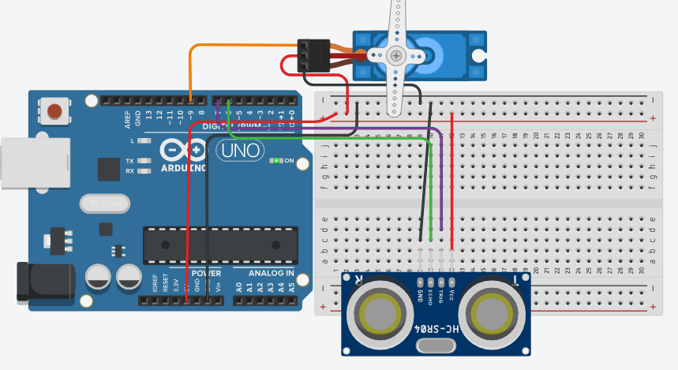

// Sección 01
Objetivo del proyecto
1
¿Qué se pretende demostrar?
Diseñar un sistema automático que controle la posición de un servomotor según la distancia detectada por un sensor ultrasónico, utilizando la placa Arduino Uno. Se busca comprender cómo un sensor puede medir la proximidad de un objeto y transformar esa información en movimiento mecánico mediante un servomotor. Además, esta práctica permite aplicar estructuras condicionales en programación para asignar diferentes ángulos al servomotor según rangos de distancia, simulando sistemas inteligentes como barreras automáticas, puertas de acceso o mecanismos de orientación.
// Sección 02
Materiales necesarios
01 · 1 Placa protoboard
02 · 1 Arduino
03 · 1 Servomotor
04 · Jumpers
05 · 1 Sensor ultrasónico HC-SR04
// Sección 03
Diagrama Tinkercad
3
Conexión del circuito

// Sección 04
Explicación del video
4
¿Qué muestra el video?
// Sección 05
Video del circuito terminado
5
Circuito en funcionamiento
// Sección 06
Código Arduino
1